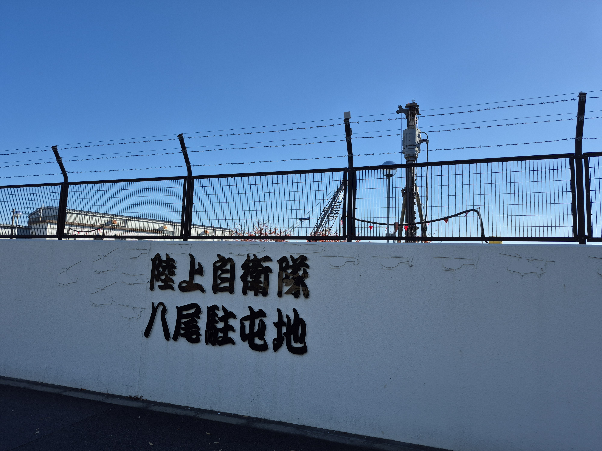
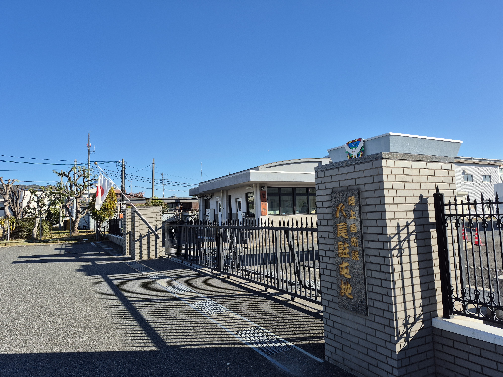
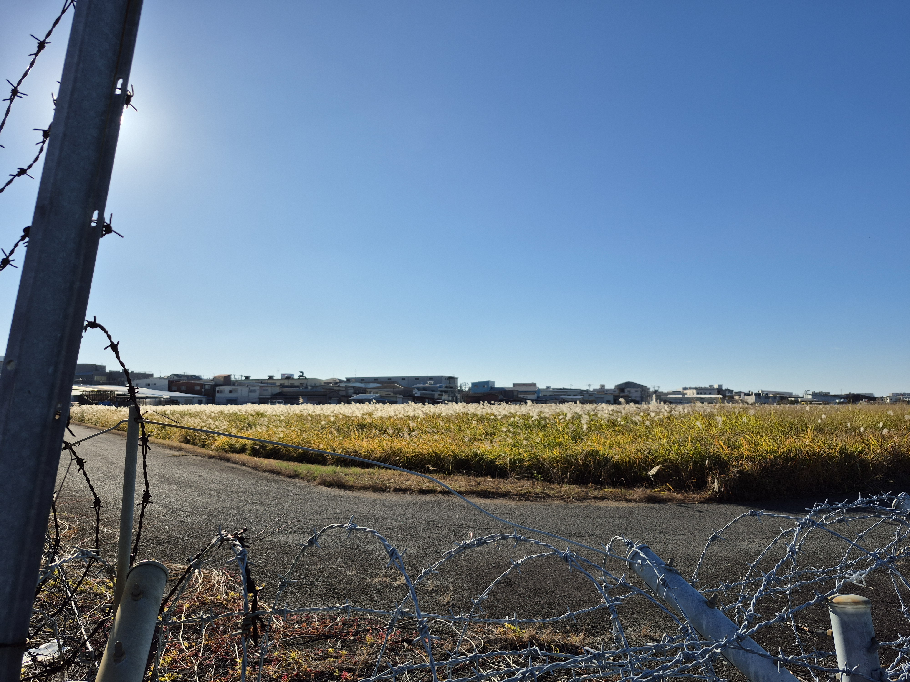
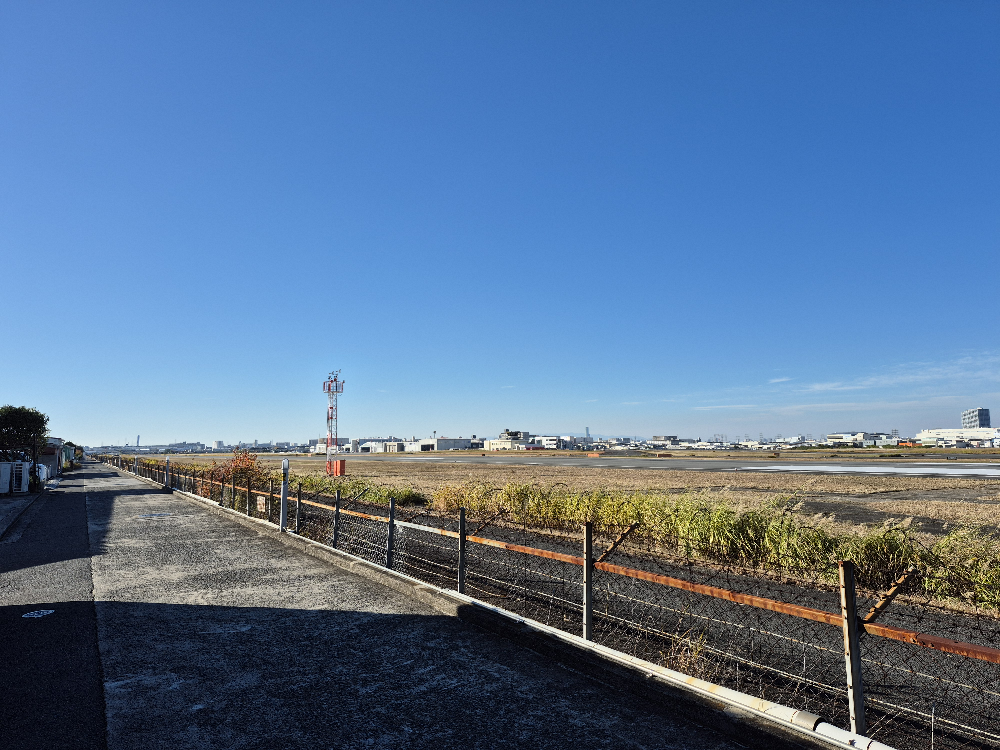
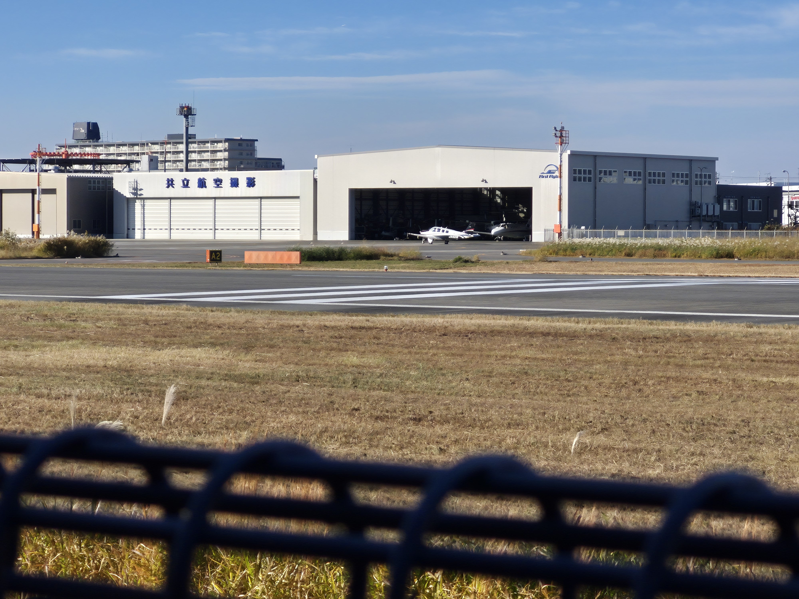
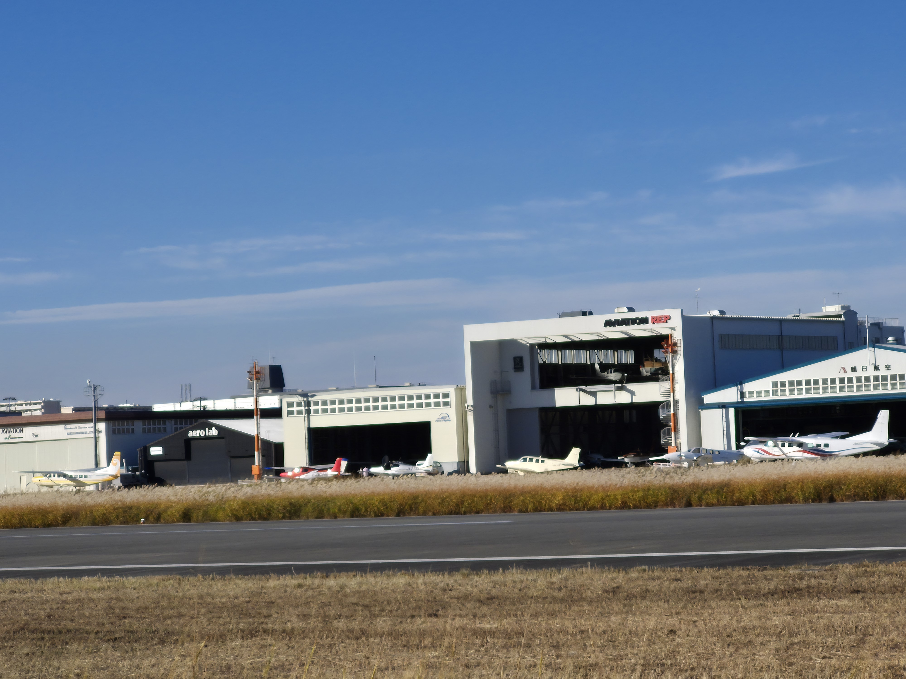
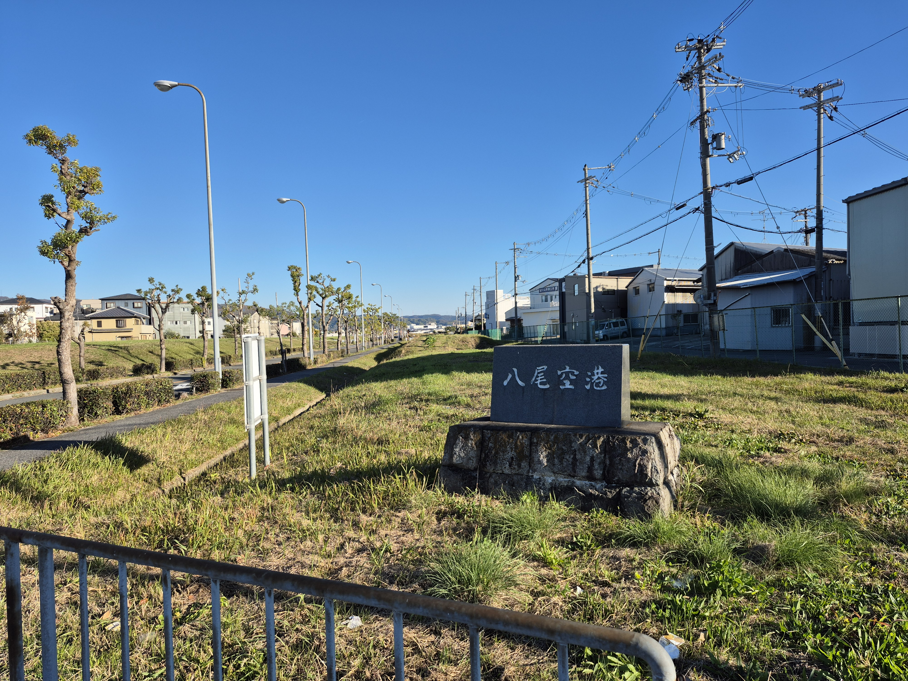
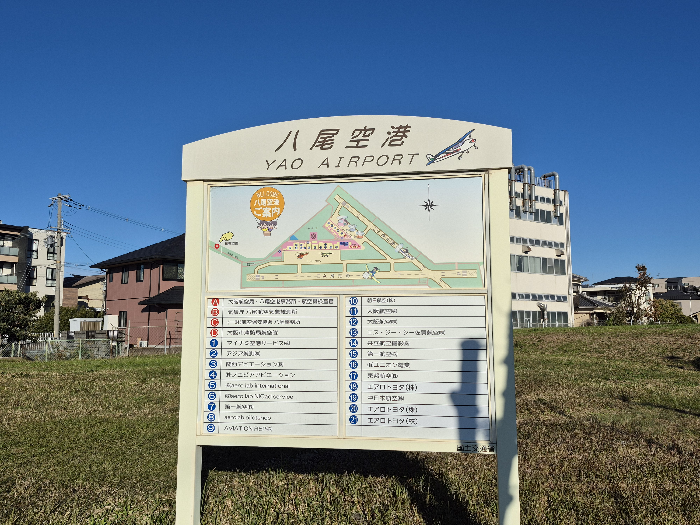

大空を感じる休日：八尾空港ウォーキング
セスナのエンジン音と広い空。知る人ぞ知る、八尾の絶景エアポート散策へ。
八尾空港 — 都会に残された空のオアシス
絶好のウォーキングスポット
八尾空港は、定期便が飛ぶような大型空港ではなく、小型航空機やヘリコプターが主役の「ゼネラル・アビエーション空港」です。
空港の周囲は高い建物が少なく、視界が開けているため、実は絶好のウォーキングスポット。風を感じながら広い空を眺めれば、日頃のストレスも吹き飛びます。今回は、私が実際に空港の外周を散策して見つけた見どころをご紹介します。
空港北側：陸上自衛隊 八尾駐屯地
空港の北側エリアには、陸上自衛隊の八尾駐屯地が隣接しています。ここでは日常的に自衛隊のヘリコプターが訓練を行っており、迫力ある離着陸を間近で見ることができます。
タイミングが良ければ、大型ヘリコプターの編隊飛行に遭遇することもしばしば。メカ好きにはたまらないエリアです。


空港南側：滑走路を一望する絶景
南側に回ると、視界が一気に開けます。フェンス越しには空港の広大な敷地が広がり、東側には風に揺れるススキ野原が。夕暮れ時は特に幻想的です。
また、南側には空港内部を覗くような長い一本道があり、ここから眺める滑走路はまさに「絶景」。空の広さを一番感じられるポイントです。


憧れの翼：並ぶセスナ機
空港沿いを歩いていると、格納庫（ハンガー）エリアが見えてきます。ここには、色とりどりのセスナ機や小型飛行機が何機も駐機されています。
整備中の機体や、これから飛び立とうとするパイロットの姿を見かけることも。「いつか自分も空を飛んでみたい」そんな夢を抱かせてくれる光景です。


歴史を刻む：空港西側エリア
最後に西側エリアへ。ここには「八尾空港」と刻まれた立派な石碑があり、記念撮影スポットとしてもおすすめです。
また、近くには空港周辺の案内図も設置されており、現在地や滑走路の配置を確認することができます。散策の締めくくりに、ここから今日のルートを振り返ってみてはいかがでしょうか。


八尾空港は、ただの交通施設ではなく、空を身近に感じられる素晴らしいレジャースポットでした。
カメラを持って、あるいはウォーキングシューズを履いて、ぜひ一度訪れてみてください。